🇪🇸 Term 3 — Study Guide
Topics: school subjects & opinions • teachers • what's in your school • the timetable • telling the time
💡 Big idea for this term: opinions! Learn me gusta / no me gusta / me encanta / odio and join them to a subject with a reason using porque (because).
3.1 Las asignaturas — School subjects
🔑 Subjects have el / la / las in front (the). Most are masculine (el), but the "‑ía" ones and a few others are feminine (la), and las matemáticas / las ciencias are plural.
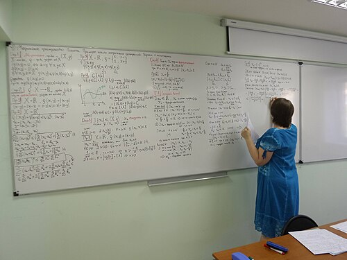 las matemáticas maths |
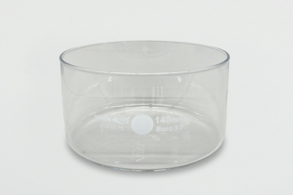 las ciencias science |
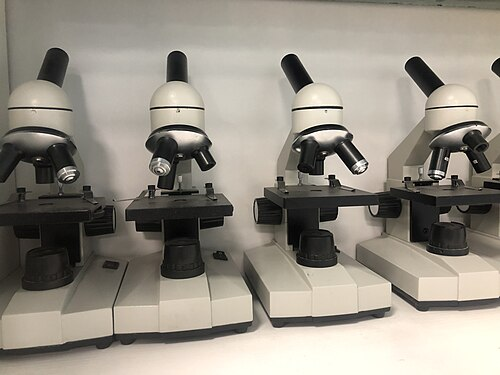 la biología biology |
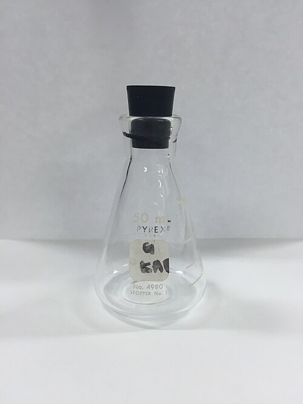 la química chemistry |
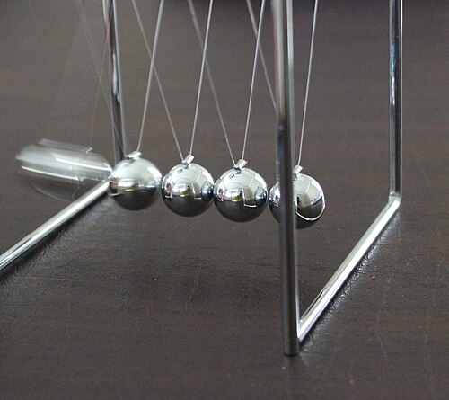 la física physics |
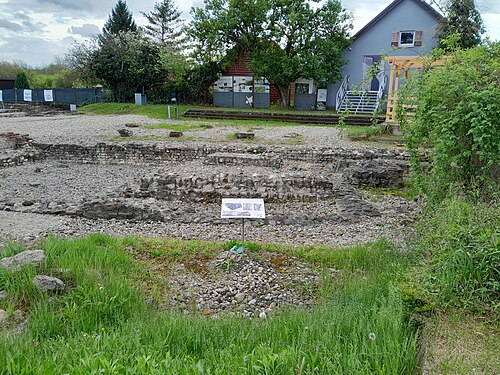 la historia history |
 la geografía geography |
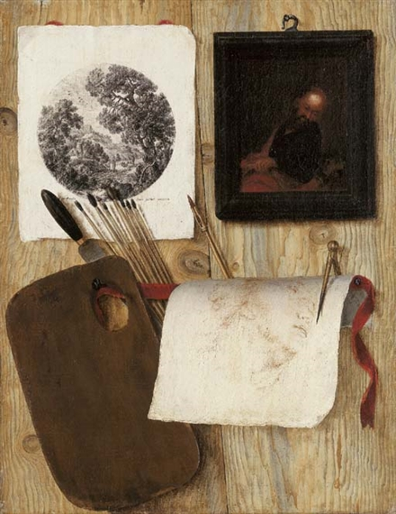 el arte / el dibujo art |
 la música music |
 la educación física P.E. |
el inglés English |
 el francés French |
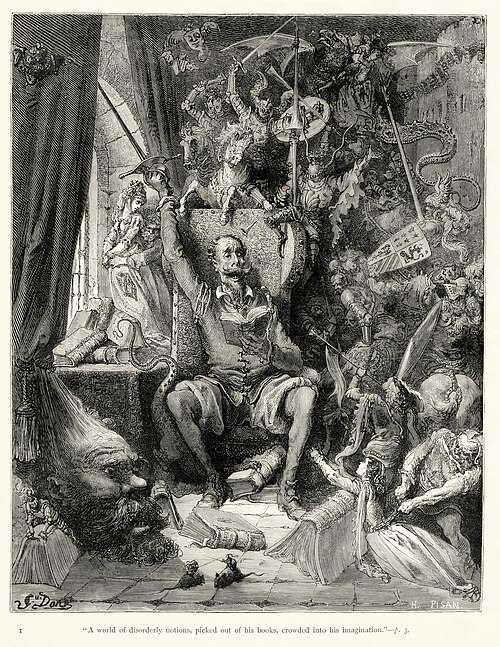 el español Spanish |
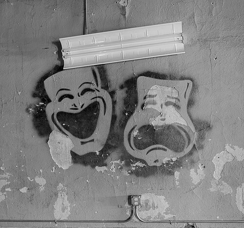 el teatro / el drama drama |
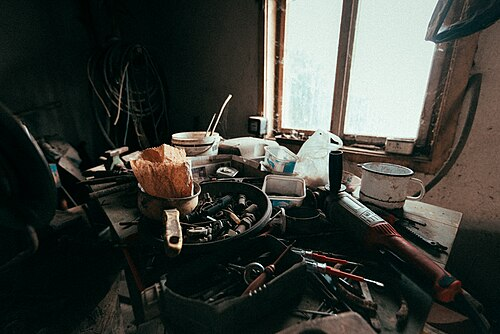 la tecnología technology / DT |
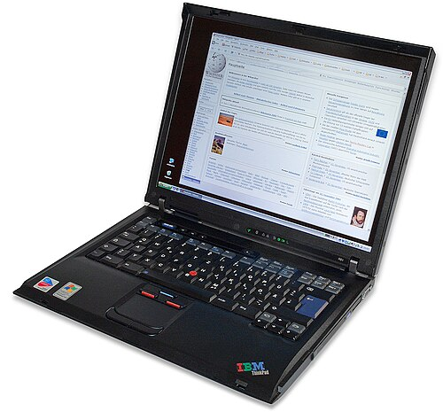 la informática ICT / computing |
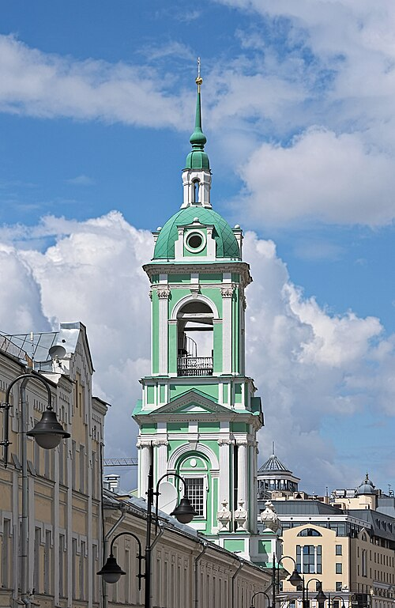 la religión R.E. |
3.2 Opiniones — Saying what you think
🔑 Opinion + subject + porque + es + adjective. ⚠️ Tricky bit: with me gusta / me encanta, use gusta for one subject and gustan for plural subjects: Me gusta la historia (1 subject) but Me gustan las ciencias (plural subject).
| Opinion (Spanish) | English |
|---|---|
| Me gusta(n)... | I like... |
| No me gusta(n)... | I don't like... |
| Me encanta(n)... | I love... |
| Odio... | I hate... |
| Prefiero... | I prefer... |
| Mi asignatura favorita es... | My favourite subject is... |
Reasons — porque es... (because it's...)
| Spanish | English | Spanish | English |
|---|---|---|---|
| interesante | interesting | aburrido/a | boring |
| fácil | easy | difícil | difficult |
| útil | useful | inútil | useless |
| divertido/a | fun | guay | cool |
| importante | important | práctico/a | practical |
Example: Me encanta el arte porque es divertido y relajante, pero odio las matemáticas porque son difíciles. = I love art because it's fun and relaxing, but I hate maths because it's difficult.
3.3 Mis profesores — My teachers
🔑 Mi profesor de... es... (My male teacher of... is...) / Mi profesora de... es... (My female teacher of... is...). Se llama... = is called...
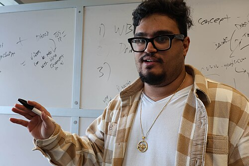
el profesor / la profesora — the teacher
| Spanish (m / f) | English | Spanish (m / f) | English |
|---|---|---|---|
| simpático/a | nice | antipático/a | unpleasant |
| paciente | patient | estricto/a | strict |
| divertido/a | fun | aburrido/a | boring |
| justo/a | fair | severo/a | severe / harsh |
| inteligente | intelligent | trabajador/a | hardworking |
Example: Mi profesora de inglés se llama señora Smith y es muy simpática y paciente. = My English teacher is called Mrs Smith and she is very nice and patient.
3.4 ¿Qué hay en tu instituto? — What's in your school?
🔑 En mi instituto hay... = In my school there is/are... · No hay... = There isn't/aren't...
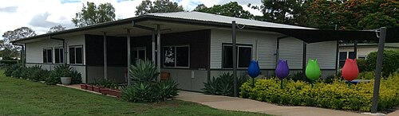 el instituto school |
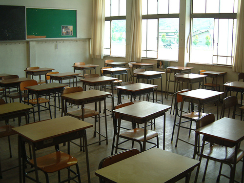 las aulas / las clases classrooms |
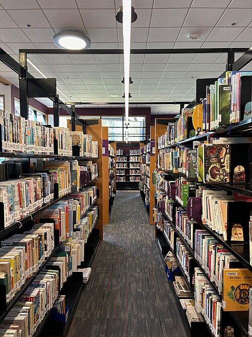 la biblioteca library |
 el comedor canteen |
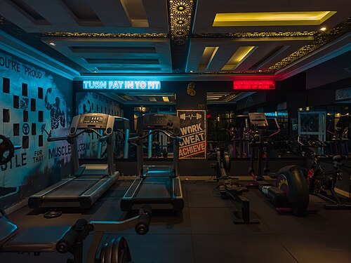 el gimnasio gym |
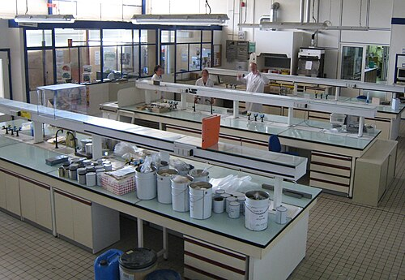 el laboratorio laboratory |
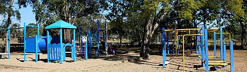 el patio playground |
| Spanish | English |
|---|---|
| un campo de fútbol | a football pitch |
| una sala de profesores | a staff room |
| un salón de actos | an assembly hall |
| muchas aulas | lots of classrooms |
Example: En mi instituto hay una biblioteca grande y un gimnasio, pero no hay piscina. = In my school there is a big library and a gym, but there isn't a swimming pool.
3.5 La hora — Telling the time
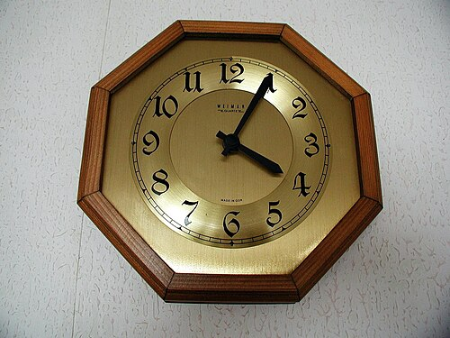
el reloj — the clock · ¿Qué hora es? — What time is it?
🔑 Es la una = It's 1 o'clock (only 1 o'clock uses es la). For all other hours use Son las...
| Spanish | English |
|---|---|
| ¿Qué hora es? | What time is it? |
| Es la una. | It's one o'clock. |
| Son las dos. | It's two o'clock. |
| Son las tres y cuarto. | It's quarter past three. |
| Son las cuatro y media. | It's half past four. |
| Son las cinco menos cuarto. | It's quarter to five. |
| Son las seis y diez. | It's ten past six. |
| Son las siete en punto. | It's exactly seven o'clock. |
| a las ocho | at eight o'clock |
🧠 Remember: y = "past" (and), menos = "to" (minus). y media = half past · y cuarto = quarter past · menos cuarto = quarter to.
3.6 Mi horario — My timetable
🔑 Los lunes tengo... = On Mondays I have... · a primera hora = first lesson · a las nueve = at nine o'clock.
| Spanish | English |
|---|---|
| ¿Qué estudias? | What do you study? |
| ¿Cuál es tu asignatura favorita? | What is your favourite subject? |
| ¿Cuál es tu día favorito? | What is your favourite day? |
| ¿A qué hora tienes...? | At what time do you have...? |
| Los lunes tengo historia a primera hora. | On Mondays I have history first lesson. |
| el recreo | break time |
| la hora de comer | lunchtime |
Example: Mi día favorito es el viernes porque tengo arte y educación física. Los lunes tengo matemáticas a las nueve y es aburrido. = My favourite day is Friday because I have art and PE. On Mondays I have maths at 9 o'clock and it's boring.
✅ Quick self‑test (cover the right side!)
- I love science because it's interesting → Me encantan las ciencias porque son interesantes
- My favourite subject is art → Mi asignatura favorita es el arte
- It's half past two → Son las dos y media
- In my school there is a library → En mi instituto hay una biblioteca
- My maths teacher is strict → Mi profesor/a de matemáticas es estricto/a
👉 When these feel easy, go to Term 3 → MCQ Mock 1.